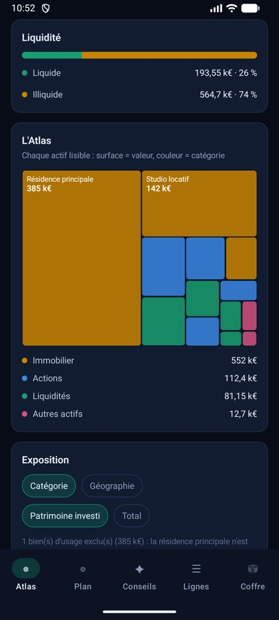
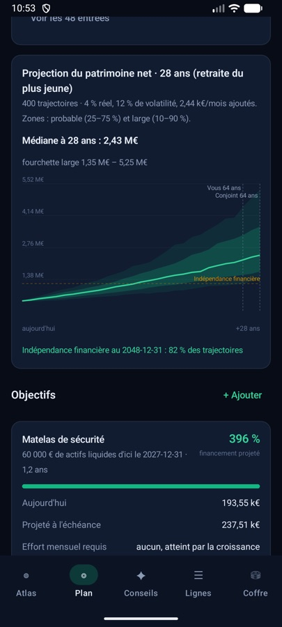

Pour les familles qui épargnent
Trésorine rassemble les comptes, placements, biens et prêts du foyer sur votre téléphone, et vous montre où vous en êtes et où vous allez. Tout est chiffré, et rien ne quitte l'appareil.
Android · Sans compte · Sans accès à Internet
Un tableur pour les comptes, l'appli de la banque pour le livret, un PDF pour l'assurance-vie. Personne dans le foyer ne sait vraiment combien vous avez, ni si vous épargnez assez.
Comptes, livrets, PEA, assurance-vie, biens, prêts. Une à une, ou d'un coup avec un fichier CSV.
Patrimoine net, liquidités, répartition par catégorie et par zone, et leur évolution mois après mois.
Taux d'épargne, objectifs datés et projection jusqu'à la retraite, pour savoir si le rythme suffit.


Un profil administrateur et un profil lecture seule. Les lignes privées n'existent pas pour le second : elles ne sont même pas déchiffrables.
Combien de mois de dépenses vos liquidités couvrent, sans compter la trésorerie de société, qui n'est pas disponible pour le foyer.
Le coût annuel des frais et de la fiscalité estimée de vos placements, en euros et en pourcentage des actifs.
Matelas de sécurité, apport, indépendance financière : le plan calcule l'effort mensuel nécessaire.
Chaque mise à jour garde la valeur précédente, pour voir l'évolution ligne par ligne.
Importez un tableur en CSV ou JSON, exportez le coffre chiffré pour le sauvegarder où vous voulez.
Trésorine arrive bientôt sur Google Play. Un message le jour du lancement ?
Me prévenir du lancement